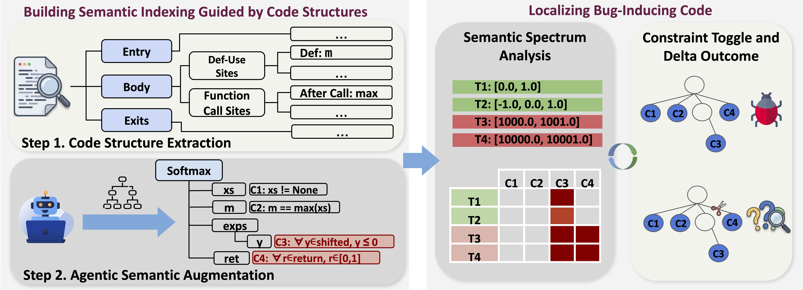
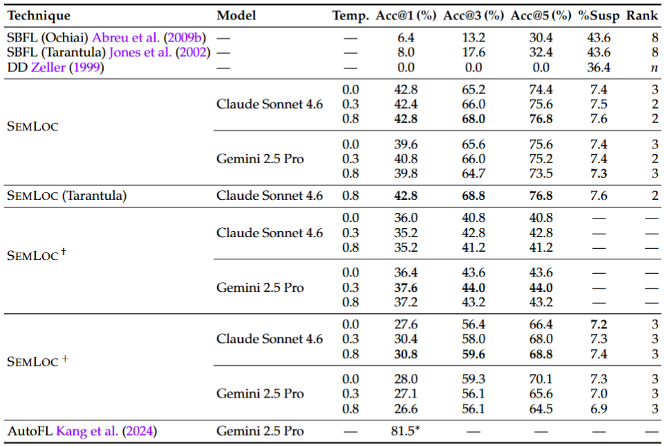

ASE 2026 · To Appear

Fault localization identifies program locations responsible for observed failures. Existing techniques rank suspicious code using syntactic spectra---signals derived from execution structure such as statement coverage, control-flow divergence, or dependency reachability. These signals collapse for semantic bugs, where failing and passing executions traverse identical code paths and differ only in whether semantic intent is honored. Recent LLM-based approaches extend localization with semantic reasoning, but they produce stochastic, unverifiable outputs: responses vary across runs, cannot be systematically cross-referenced against runtime evidence from multiple tests, and provide no mechanism for distinguishing cascading downstream symptoms from root-cause violations.
We present SemLoc, a fault localization framework built on structured semantic grounding. Our key novelty is that SemLoc converts free-form LLM semantic reasoning into a closed intermediate representation that binds each inferred property to a specific, typed program anchor, making it checkable at runtime and attributable to a concrete program structure. SemLoc executes instrumented programs and constructs a semantic violation spectrum, which is a constraint-by-test violation matrix, from which suspiciousness scores are derived analogously to coverage-based fault localization. A counterfactual verification step further prunes over-approximate constraints, distinguishing primary causal violations from cascading effects and providing a structured, verifiable semantic explanation beyond line-level rankings.
We evaluate SemLoc on SemFault-250, a derived evaluation corpus of 250 Python programs with single semantic faults, curated from real-world repositories and prior benchmarks. Results show that SemLoc substantially outperforms 5 different coverage, reduction, and LLM-based fault localization baselines, achieving strong Top-1 (42.8%) and Top-3 (68%) localization accuracy while narrowing inspection to 7.6% of executable lines. Counterfactual verification provides a further 12% gain in localization accuracy and, in most cases, isolates a primary causal semantic constraint.

An LLM analyzes the buggy program and failing tests to infer typed behavioral constraints — bound to specific program anchors (entries, def-use sites, loop boundaries, return points) in a closed, checkable schema.
SemLoc uses a tree-sitter AST to inject lightweight runtime checks at each constraint anchor. Instrumented programs behave identically to originals but emit per-test violation events.
Running the full test suite produces a constraint-by-test violation matrix. Suspiciousness scores are computed via the Ochiai coefficient — analogous to coverage-based SBFL, but operating on semantic properties.
Minimal hypothetical patches toggle each violated constraint and re-execute the test suite. Primary causal violations are distinguished from cascading downstream effects, yielding a causally-grounded final ranking.
pip install git+https://github.com/your-org/semlocsemloc demo --skip-llmRuns the full pipeline on a bundled benchmark example using pre-computed constraints and prints ranked suspicious lines with the ground truth fault highlighted.
export OPENAI_API_KEY="sk-..." # or GEMINI_API_KEY / Vertex AI credentials
semloc locate \
--program my_module.py \
--tests test_my_module.py \
--model gpt-4o \
--out-dir run1# Re-run only scoring (reuse prior violations)
semloc locate --program my_module.py --tests test_my_module.py \
--out-dir run1 --steps score,locate
# Use pre-computed constraints, skip LLM
semloc locate --program my_module.py --tests test_my_module.py \
--constraints constraints.json --out-dir run1See the full documentation for the complete pipeline reference, model selection guide, and experiment reproduction scripts.
250 Python programs each containing a single semantic fault, spanning five application domains:
Each program comes with a pytest test suite (passing + failing tests) and a ground truth
fault line. The benchmark is included in the repository under benchmark/.
@inproceedings{semloc2026,
title = {SemLoc: Structured Grounding of Free-Form LLM Reasoning
for Fault Localization},
author = {Yang, Zhaorui and Zhu, Haichao and Zhang, Qian
and Gupta, Rajiv and Kundu, Ashish},
booktitle = {Proceedings of the ... International Conference on ...},
year = {2026},
doi = {10.1145/nnnnnnn.nnnnnnn},
}